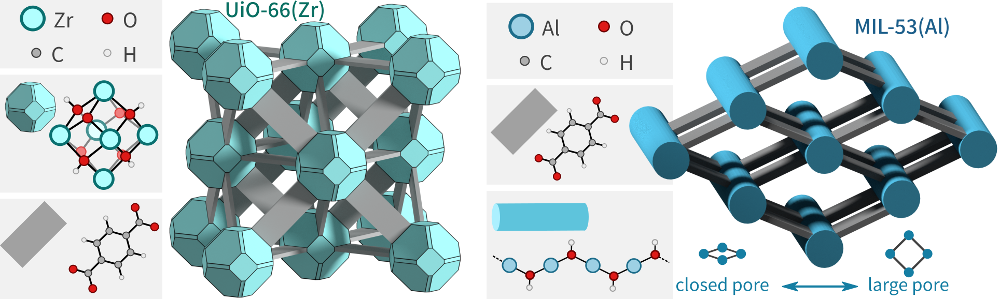

psiflow - interatomic potentials using online learning
Psiflow is a modular and scalable library for developing interatomic potentials. It uses Parsl to interface popular trainable interaction potentials with quantum chemistry software, and is designed to support computational workflows on hundreds or thousands of nodes. Psiflow is designed as an end-to-end framework; it can orchestrate all computational components between an initial atomic structure and the final trained potential. To achieve this, psiflow implements the following high-level abstractions:
- a trainable interaction potential (e.g. NequIP or MACE)
- one or more phase space sampling algorithms (e.g. biased NPT, geometry optimization)
- a reference level of theory (e.g. PBE-D3(BJ) + TZVP)
These three components are used to implement online learning algorithms, which essentially interleave phase space sampling with quantum mechanical energy evaluations and model training. In this way, the entire (relevant part of the) phase space of the system(s) of interest may be explored and learned by the model without ever having to perform ab initio molecular dynamics. Go to the Overview for a walkthrough of the most important features.
Scalable execution using Parsl
When executing psiflow workflows, individual training, sampling, and
QM evaluation operations are automatically organized in Parsl apps,
whose execution is fully customizable by the user.
For example, you could distribute all CP2K calculations to a local SLURM cluster,
perform model training on a GPU from a Google Cloud instance, and forward
the remaining phase space sampling and data processing operations to a single
workstation in your local network.
Naturally, Parsl tracks the dependencies between all objects and manages execution of the workflow
in an asynchronous manner.
Psiflow centralizes all execution-level configuration options using an ExecutionContext.
It forwards infrastructure-specific options within Parsl, such as the requested number of nodes
per SLURM job or the specific Google Cloud instance to be use, to training,
sampling, and QM evaluation operations to ensure they proceed as requested.
Effectively, the ExecutionContext hides all details of the execution
infrastructure and exposes simple and platform-agnostic resources which may be
used by training, sampling, and QM evaluation apps.
As such, we ensure that execution-side details are strictly separated from
the definition of the computational graph itself.
For more information, check out the psiflow Configuration page.
Citing psiflow
Psiflow is developed at the Center for Molecular Modeling. If you use it in your research, please cite the following paper:
Machine learning Potentials for Metal-Organic Frameworks using an Incremental Learning Approach, Sander Vandenhaute et al., npj Computational Materials, 9, 19 (2023)
Atomic data
In psiflow, a set of atomic configurations is represented using the Dataset class.
It may represent training/validation data for model development, or
a trajectory of snapshots that was generated using molecular dynamics.
A Dataset instance mimics the behavior of a list of ASE Atoms instances:
from psiflow.data import Dataset
data_train = Dataset.load('train.xyz') # create a psiflow Dataset from a file
data_subset = data_train[:10] # create a new Dataset instance with the first 10 states
data_train = data_subset + data_train[10:] # combining two datasets is easy
data = Dataset.load('lots_of_data.xyz')
train, valid = data.shuffle().split(0.9) # shuffle structures and partition into train/valid sets
type(train) # psiflow Dataset
type(valid) # psiflow Dataset
Dataset instance and an actual Python list of
Atoms is that a Dataset can represent data that will be generated in the future.
Parsl 101: Apps and Futures
To understand what is meant by 'generating data in the future', it is necessary to introduce the core concepts in Parsl: apps and futures. In their simplest form, apps are just functions, and futures are the result of a function given a set of inputs. Importantly, a Future already exists before the actual calculation is performed. In essence, a Future promises that, at some time in the future, it will contain the actual result of the function evaluation. Take a look at the following example:
from parsl.app.app import python_app
@python_app # convert a regular Python function into a Parsl app
def sum_integers(a, b):
return a + b
sum_future = sum_integers(3, 4) # tell Parsl to generate a future that represents the sum of integers 3 and 4
print(sum_future) # is an AppFuture, not an integer
print(sum_future.result()) # now compute the actual result; this will print 7 !
The actual atomic configurations are stored as a Parsl future, in an attribute of the Dataset
object.
Actually getting the data would require the user to make a .result() call similar
to the trivial Parsl example above.
Let's go back to the first example and try and get the actual list of Atoms instances:
data_train = Dataset.load('train.xyz')
atoms_list = data_train.as_list() # returns AppFuture
isinstance(atoms_list, list) # returns False!
atoms_list.result() # this is the actual list
data_train[4] # AppFuture representing the configuration at index 4
data_train[4].result() # actual Atoms instance
data_train[4].result() # actual Atoms instance
data_train[4].result().info['energy'] # potential energy, float
data_train[4].result().info['stress'] # virial stress, 2darray of shape (3, 3)
data_train[4].result().arrays['forces'] # forces, 2darray of shape (natoms, 3)
Trainable potentials
Once we know how datasets are represented, we can start defining models.
Psiflow defines an abstract BaseModel interface which each
particular machine learning potential should subclass.
In addition, psiflow provides configuration dataclasses for each model with
reasonable defaults.
- NequIP : implemented by
NequIPModelandNequIPConfig - Allegro : implemented by
AllegroModelandAllegroConfig - MACE : implemented by
MACEModelandMACEConfig
The BaseModel interface ensures that each model implements the following methods
initialize: compute energy shifts and scalings as well as the average number of layers (and any other network normalization metrics) using a given training dataset, and initialize model weights.train: train the parameters of a model using two separate datasets, one for actual training and one for validation. The current model parameters are used as starting parameters for the trainingevaluate: compute the energy, force, and stress predictions on a given test dataset
The following example illustrates how Dataset and BaseModel instances can be
used to train models and evaluate errors.
from psiflow.data import Dataset
from psiflow.models import NequIPModel, NequIPConfig
# setup
data_train = Dataset.load('train.xyz') # load training and validation data
data_valid = Dataset.load('valid.xyz')
config = NequIPConfig()
config.num_features = 16 # modify NequIP parameters to whatever
model = NequIPModel(config) # create model instance
# initialize, train, deploy
model.initialize(data_train) # this will calculate the scale/shifts, and average number of neighbors
model.train(data_train, data_valid) # train using supplied datasets
model.save('./') # saves initialized config and model to current working directory!
# evaluate test error
data_test = Dataset.load('test.xyz') # test data; contains QM reference energy/forces/stress
data_test_model = model.evaluate(data_test) # same test data, but with predicted energy/forces/stress
errors = Dataset.get_errors( # static method of Dataset to compute the error between two datasets
data_test,
data_test_model,
properties=['forces'], # only compute the force error
elements=['C', 'O'], # only include carbon or oxygen atoms
metric='rmse', # use RMSE instead of MAE or MAX
).result() # errors is an AppFuture, use .result() to get the actual values as ndarray
model.train() command will end up being executed using a GPU on a SLURM cluster,
whereas model deployment and evaluation of the test error gets
executed on your local computer.
See the psiflow Configuration page for more information.
In many cases, it is generally recommended to provide these models with some estimate of the absolute energy of an isolated atom for the specific level of theory and basis set considered (and this for each element). Instead of having the model learn the absolute total energy of the system, we first subtract these atomic energies in order to train the model on the formation energy of the system instead, as this generally improves the generalization performance of the model towards unseen stoichiometries.
model.add_atomic_energy('H', -13.7) # add atomic energy of isolated hydrogen atom
model.initialize(some_training_data)
model.add_atomic_energy('O', -400) # will raise an exception; model needs to be reinitialized first
model.reset() # removes current model, but keeps raw config
model.add_atomic_energy('O', -400) # OK!
model.initialize(some_training_data) # offsets total energy with given atomic energy values per atom
BaseModel instances will automatically offset the potential energy in a (labeled)
Dataset by the sum of the energies of the isolated atoms; the underlying PyTorch network is then initialized/trained
on the formation energy of the system instead.
In order to avoid artificially high energy discrepancies between models trained on the formation energy on one hand,
and reference potential energies as obtained from any BaseReference,
the evaluate method will first perform the converse operation, i.e. add the energies of the isolated atoms
to the model's prediction of the formation energy.
Molecular simulation
Having trained a model, it is possible to explore the phase space
of a physical system in order to generate new geometries.
Psiflow defines a BaseWalker interface that should be used to implement specific
phase space exploration algorithms.
Each walker implements a propagate method which performs the phase space sampling
using a BaseModel instance and returns the final state in which it 'arrived'.
Each walker has a counter attribute which defines the number of steps that have
elapsed between its initial structure and said returned state.
Let's illustrate this using an important example: molecular dynamics with the DynamicWalker.
Temperature and pressure control are implemented
by means of stochastic Langevin dynamics
because it typically dampens the correlations
as compared to deterministic time propagation methods based on extended Lagrangians (e.g. Nose-Hoover).
Propagation of a walker will return a metadata
namedtuple
which has multiple fields, some of which are specific to the type of the walker.
import numpy as np
from psiflow.sampling import DynamicWalker
walker = DynamicWalker(
data_train[0], # initialize walker to first configuration in dataset
timestep=0.5, # Verlet timestep
steps=1000, # number of timesteps to perform
step=100, # frequency with which states are sampled
start=0, # timestep at which sampling is started
temperature=300, # temperature, in kelvin
pressure=None, # pressure, in MPa. If None, then simulation is NVT
seed=0, # numpy random seed with which initial Boltzmann velocities are set
)
# run short MD simulation using some model)
metadata = walker.propagate(model=model)
The following fields are always present in the metadata object:
metadata.state:AppFutureof aFlowAtomsobject which represents the final statemetadata.counter:AppFutureof anintrepresenting the total number of steps that the walker has taken since its initialization (or most recent reset).metadata.reset:AppFutureof aboolwhich indicates whether the walker was reset during or after propagation (e.g. because the temperature diverged too far from its target value).
The dynamic walker in particular has a few additional fields which might be useful:
metadata.temperature:AppFutureof afloatrepresenting the average temperature during the simulationmetadata.stdout: filepath of the output log of the molecular dynamics runmetadata.time:AppFutureof afloatwhich represents the total elapsed time during propagation.
When doing active learning, we're usually only interested in the final state of each of the walkers
and whether the average temperature remained within reasonable bounds.
In that case, the returned metadata object contains all the necessary information about
the propagation.
However, the actual trajectory that the walker has followed can be optionally returned as
a Dataset:
metadata, trajectory = walker.propagate(model=model, keep_trajectory=True)
assert trajectory.length().result == (1000 / 100 + 1) # includes initial and final state
assert np.allclose( # metadata contains final state
metadata.state.result().get_positions(),
trajectory[-1].result().get_positions(),
)
Parsl 102: Futures are necessary
This example should also illustrate why exactly we would represent data using
Futures in the first place.
Suppose that the walker.propagate call is configured to run on a SLURM job
that has a walltime of only ten minutes.
At the time of submission, all psiflow knows is that, at some point in the future,
it will receive a chunk of data that represents the trajectory of the simulation.
It cannot yet know how many states are precisely going to be present in that
dataset; for that we would have to actually wait for the result.
This waiting is precisely what is enforced when using .result() on a Future.
For example, if we would like to find out how many states were actually generated,
we'd use the dataset.length() function that returns a Future of the length
of the dataset:
length = trajectory.length() # will execute before the trajectory is actually generated
length.result() # enforces Python to wait until the MD calculation has finished, and then compute the actual length
Successful phase space exploration is typically only possible with models that
are at least vaguely aware of what the low- and high-energy configurations of
the system look like.
If simulation temperatures are too high, simulation times are too long, or
the model is simply lacking knowledge on certain important low-energy regions
in phase space, then the simulation might explode. In practice, this means
that atoms are going to experience enormous forces, fly away, and incentivize
others to do the same.
In an online learning context, there is no point in further propagating walkers
after such unphysical events have occurred because the sampled states
are either impossible to evaluate with the given reference (e.g. due to SCF
convergence issues) or do not contain any relevant information on the atomic
interactions.
While there exist a bunch of techniques in literature in order to check for such divergences,
psiflow takes a pragmatic approach and simply monitors the temperature of the walkers.
Statistical mechanics provides an exact expression for the distribution of the instantaneous
temperature of the system as a function of the number of atoms N and the temperature
of the heat bath T:
$$
3N\frac{T_i}{T} \sim \chi^2(3N)
$$
in which the chi-squared distribution
arises because the temperature (i.e. kinetic energy) is essentially equal to the sum of
the squares of 3N normally distributed velocity components.
Based on the inverse cumulative distribution function and a fixed p-value, we can
derive a threshold temperature such that:
$$
P\left[T_i > T_{\text{thres}}\right] = 1 - p
$$
For example, for a system of 100 atoms in equilibrium at 300 K, we obtain a threshold temperature of
about 360 K for p = 10-2, and about 400 K for p = 10-4.
If the temperature at the last step of the MD simulation exceeds this threshold
(or model evaluation yielded NaN or ValueError at any point throughout the propagation),
the walker will reset its internal state to the starting configuration
in order to make sure that subsequent propagations again start from a physically
sensible structure.
In practical scenarios, phase space exploration is often performed in a massively
parallel manner, i.e. with multiple walkers.
The multiply() class method provides a convenient way of initializing a list of
BaseWalker instances which differ only in the initial starting
configuration and their random number seed.
Let us try and generate 10 walkers which are initialized with different
snapshots from the trajectory obtained before:
walkers = DynamicWalker.multiply(
10,
data_start=trajectory, # walker i initialized to trajectory[i]
temperature=300,
steps=100,
)
for i, walker in enumerate(walkers):
assert walker.seed == i # unique seed for each walker
states = [] # keep track of 'Future' states
for walker in walkers:
metadata = walker.propagate(model=model) # proceeds in parallel!
states.append(metadata.state)
data = Dataset(states) # put them in a Dataset
Besides the dynamic walker, we also implemented an OptimizationWalker which
wraps around ASE's
preconditioned L-BFGS implementation
; this is an efficient optimization algorithm which typically requires less steps than either conventional L-BFGS
or first-order methods such as conjugate gradient (CG).
Note that geometry optimizations in psiflow will generally
not be able to reduce the residual forces in the system below about 0.01 eV/A
because of the relatively limited precision (float32) of model evaluation.
Bias potentials and enhanced sampling
In the vast majority of molecular dynamics simulations of realistic systems, it is beneficial to modify the equilibrium Boltzmann distribution with bias potentials or advanced sampling schemes as to increase the sampling efficiency and reduce redundancy within the trajectory. In psiflow, this is achieved by interfacing the dynamic walkers with the PLUMED library, which provides the user with various choices of enhanced sampling techniques. This allows users to apply bias potentials along specific collective variables or evaluate the bias energy across a dataset of atomic configurations.
In the following example, we define the PLUMED input as a multi-line string in
Python. We consider the particular case of applying a metadynamics bias to
a collective variable - in this case the unit cell volume.
Because metadynamics represents a time-dependent bias,
it relies on an additional hills file which keeps track of the location of
Gaussian hills that were installed in the system at various steps throughout
the simulation. Psiflow automatically takes care of such external files, and
their file path in the input string is essentially irrelevant.
To apply this bias in a simulation, we employ the BiasedDynamicWalker; it is
almost identical to the DynamicWalker except that it accepts an additional
(mandatory) bias keyword argument during initialization:
from psiflow.sampling import BiasedDynamicWalker, PlumedBias
plumed_input = """
UNITS LENGTH=A ENERGY=kj/mol TIME=fs
CV: VOLUME
METAD ARG=CV SIGMA=100 HEIGHT=2 PACE=10 LABEL=metad FILE=dummy
"""
bias = PlumedBias(plumed_input) # a new hills file is generated
walker = BiasedDynamicWalker(data_train[0], bias=bias, timestep=0.5) # initialize dynamic walker with bias
metadata = walker.propagate(model) # performs biased MD
PlumedBias objects
on Dataset instances using the bias.evaluate() method.
The returned object is a Parsl Future that represents an ndarray of shape (nstates, ncolvars + 1).
The first column represents the value of the collective variable for each state,
and the second column contains the bias energy.
values = bias.evaluate(data_train, variable='CV') # compute the collective variable 'CV' and bias energy
assert values.result().shape[0] == data_train.length().result() # each snapshot is evaluated separately
assert values.result().shape[1] == 2 # CV and bias per snapshot, in PLUMED units!
assert not np.allclose(values.result()[:, 1], 0) # bias energy from added hills
plumed_input = """
UNITS LENGTH=A ENERGY=kj/mol TIME=fs
CV: VOLUME
RESTRAINT ARG=CV AT=150 KAPPA=1 LABEL=restraint
"""
walker = BiasedDynamicWalker(data_train[0], bias=PlumedBias(plumed_input)) # walker with harmonic bias
state = walker.propagate(model=model).state
# change bias center and width
walker.bias.adjust_restraint(variable='CV', kappa=2, center=200)
state_ = walker.propagate(model).state
# if the system had enough time to equilibrate with the bias, then the following should hold
assert state.result().get_volume() < state_.result().get_volume()
import numpy as np
from psiflow.sampling.bias import generate_external_grid
bias_function = lambda x: np.exp(-0.01 * (x - 150) ** 2) # Gaussian hill at CV=150
grid_values = np.linspace(0, 300, 500) # CV values for numerical grid
grid = generate_external_grid( # generate contents of PLUMED grid file
bias_function,
grid_values,
'CV', # use ARG=CV in the EXTERNAL action
periodic=False, # periodicity of CV
)
bias = PlumedBias(plumed_input, data={'EXTERNAL': grid}) # pass grid file as external dependency
Note
PLUMED interfacing is not supported for the OptimizationWalker because
(i) it is rarely ever useful to add a bias during optimization, and (ii)
the optimization is performed in ASE, and
ASE's PLUMED interface is shaky at best.
Level of theory
Atomic configurations should be labeled with the correct QM energy,
force, and virial stress before they can be used during model training.
The BaseReference class implements the singlepoint evaluations using specific
QM software packages and levels of theory.
At the moment, psiflow only supports CP2K as the reference level of theory,
though VASP and ORCA will be added in the near future.
The main functionality of a BaseReference instance is provided by its
evaluate method, which accepts both a Dataset as well as a (future of a)
single FlowAtoms instance, and performs the single-point calculations.
Depending on which argument it receives, it returns either a future or a Dataset
which contain the QM energy, forces, and stress.
_, trajectory = walker.propagate(model=model, keep_trajectory=True) # trajectory of states
labeled = reference.evaluate(trajectory) # massively parallel evaluation (returns new Dataset with results)
assert isinstance(labeled, Dataset)
print(labeled[0].result().info['energy']) # cp2k potential energy!
labeled = reference.evaluate(trajectory[0]) # evaluates single state (returns a FlowAtoms future)
assert isinstance(labeled, AppFuture)
assert isinstance(labeled.result(), FlowAtoms)
print(labeled.result().info['energy']) # will print the same energy
FlowAtoms class:
assert labeled.result().reference_status # True, because state is successfully evaluated
print(labeled.result().reference_stdout) # e.g. ./psiflow_internal/000/task_logs/0000/cp2k_evaluate.stdout
print(labeled.result().reference_stderr) # e.g. ./psiflow_internal/000/task_logs/0000/cp2k_evaluate.stderr
CP2K
The CP2KReference expects a traditional CP2K
input file
(again represented as a multi-line string in Python, just like the PLUMED input);
it should only contain the FORCE_EVAL section.
Additional input files which define the basis sets, pseudopotentials, and
dispersion correction parameters have to be added to the calculator after initialization.
from psiflow.reference import CP2KReference
cp2k_input = with file('cp2k_input.txt', 'r') as f: f.read()
reference = CP2KReference(cp2k_input)
# register additional input files with the following mapping
# if the corresponding keyword in the CP2K input file is X, use Y as key here:
# X: BASIS_SET_FILE_NAME -> Y: basis_set
# X: POTENTIAL_FILE_NAME -> Y: potential
# X: PARAMETER_FILE_NAME -> Y: dftd3
reference.add_file('basis_set', 'BASIS_MOLOPT_UZH')
reference.add_file('potential', 'POTENTIAL_UZH')
reference.add_file('dftd3', 'dftd3.dat')
NWChem
For nonperiodic systems, psiflow provides an interface with NWChem,
which implements a plethora of DFT and post-HF methods for both periodic and nonperiodic systems.
The NWChemReference class essentially wraps around the ASE calculator, and is similarly easy to use:
calculator_kwargs = {
'basis': {e: '3-21g' for e in ['H', 'C', 'O', 'N']},
'dft': {
'xc': 'pw91lda',
'mult': 1,
'convergence': {
'energy': 1e-6,
'density': 1e-6,
'gradient': 1e-6,
},
},
}
reference = NWChemReference(**calculator_kwargs)
Learning algorithms
The endgame of psiflow is to allow for the seamless development and scalable
execution of online learning algorithms for interatomic
potentials.
The BaseLearning class provides an interface based on which such
algorithms can be implemented, and it has the following characteristics:
learning.run(): performs the actual active learning using aBaseModel, aBaseReference, and a list ofBaseWalkerinstances. Optionally, you can also specify an initial dataset which can be used to bootstrap the learning (see below).- an output folder: used for storing intermediate models, (labeled) datasets, walkers, and reported metrics.
- state identifier: to facilitate logging and/or debugging of the active learning progress,
each successfully labeled state is immediately given a unique identifier (an integer).
This is necessary in order to keep track of which molecular dynamics log or DFT evaluation log
belongs to which state, especially when data is shuffled in each iteration. The identifier is stored
in the
infodict of each of theFlowAtomsinstances, and is therefore also human-readable in the dataset XYZ files. - metrics: the
Metricshelper class is used to compute and save various error metrics and other relevant diagnostics during online learning. Examples are per-element validation RMSEs or collective variables of the sampled data:dataset.logor the (a posteriori) error of individual walkers and other relevant information:+------------+--------+--------+-------+----------+----------+----------+----------+-----------+ | identifier | e_rmse | f_rmse | CV | f_rmse_H | f_rmse_C | f_rmse_N | f_rmse_I | f_rmse_Pb | +------------+--------+--------+-------+----------+----------+----------+----------+-----------+ | 0 | 0.23 | 32.15 | -4.54 | 23.82 | 47.04 | 37.72 | 27.97 | 46.47 | | 1 | 0.27 | 31.72 | -4.45 | 23.13 | 43.52 | 34.12 | 28.43 | 52.42 | | 2 | 0.45 | 33.60 | -4.49 | 27.02 | 44.40 | 40.34 | 27.77 | 48.51 | | 3 | 0.39 | 33.02 | -4.44 | 26.52 | 50.11 | 36.97 | 27.50 | 45.21 | | 4 | 0.36 | 31.75 | -4.47 | 25.15 | 41.36 | 37.35 | 27.10 | 47.16 | | 5 | 0.35 | 34.00 | -4.41 | 28.04 | 43.99 | 39.52 | 28.56 | 49.31 | ...walkers.logAlthough optional, it also provides a convenient Weights & Biases interface for easier navigation and interpretation of all of the metrics.+--------------+---------+----------+--------+--------------+-------------+------------+-------+--------+-------------------------------------+ | walker_index | counter | is_reset | f_rmse | disagreement | temperature | identifier | CV | e_rmse | stdout | +--------------+---------+----------+--------+--------------+-------------+------------+-------+--------+-------------------------------------+ | 0 | 1000 | False | 47.33 | None | 135.79 | 150 | -4.61 | 4.04 | task_7028_molecular_dynamics_openmm | | 1 | 1000 | False | 50.69 | None | 142.89 | 151 | -4.39 | 4.11 | task_7046_molecular_dynamics_openmm | | 2 | 1000 | False | 46.34 | None | 140.72 | 152 | -4.61 | 4.07 | task_7064_molecular_dynamics_openmm | | 3 | 1000 | False | 43.71 | None | 136.12 | 153 | -4.45 | 4.24 | task_7082_molecular_dynamics_openmm | ... - (optional) pretraining: pretraining is used to bootstrap active learning runs. In essence, it makes
the model familiar with the chemical bonds in the system and ensure that it doesn't go too crazy during
sampling in the first few iterations. During pretraining, a minimal set of configurations is generated by applying
random perturbations to the atomic positions and/or unit cell vectors (typically about 0.05 A in magnitude).
These configurations are then evaluated using the provided
BaseReferenceinstance after which the obtained data is split into training and validation in order to pretrain the model. Whenlearning.run()is called, it decides whether or not to perform pretraining based on whether the model has already been initialized as well as whether initial data is presented (i.e. there are four possible scenarios):- initialized model, initial data: start with active learning and append generated data to the initial data;
- uninitialized model, initial data: train the model on the initial data before starting the active learning;
- uninitialized model, no initial data: execute pretraining using the atomic geometries stored in the walkers. The size of the pretraining dataset as well as the magnitude of the perturbations is specified as keyword arguments to the learning algorithm;
- initialized model, no initial data: initialize an empty dataset and start with active learning.
The following keyword arguments are shared between all BaseLearning subclasses
path_output : pathlib.Path | str: defines the output directory in which all results are storedtrain_valid_split : float = 0.9: determines the fraction of all data that is used for training (typically 0.9)pretraining_nstates : int = 50: size of the pretraining datasetpretraining_amplitude_pos : float = 0.05: amplitude of the perturbations (in Angstrom) that is applied on the positions in order to generate the pretraining datasetpretraining_amplitude_box : float = 0.05: amplitude of the perturbations (in Angstrom) that is applied on the components of the strain tensor in order to generate the pretraining dataset. Only applicable for periodic systems.metrics: Metrics | None = Metrics(): tracks and saves various metrics in the output folder; optionally logs them to W&B.atomic_energies: dict: dictionary of atomic energies which are to be inserted in the model. These can either be actual floats containing the energy in units of eV, orAppFutureinstances which represent a float (as returned byreference.compute_atomic_energy().train_from_scratch: bool = True: whether to reinitialize and train models from scratch in each iteration, or whether to start from the weights of the current model. Usually, it's better to retrain from scratch.mix_training_validation: bool = True: whether or not to mix training and validation sets in each iteration as to improve generalization performance. Usually a good idea.identifier: int = 0: state identifier to start from when labeling successfully evaluated states. This need only be modified in more complex setups where multiple learning classes are combined.
Sequential Learning
Sequential learning is arguably the most straightforward approach to online learning for interatomic potentials.
In each iteration, walkers are propagated in phase space using a certain model,
their newly sampled geometries are quantum mechanically evaluated and added to training and validation sets,
and the model is finally retrained on all available data.
Psiflow implements this approach using a SequentialLearning class with the following run() function:
def run(
self,
model: BaseModel,
reference: BaseReference,
walkers: list[BaseWalker],
initial_data: Optional[Dataset] = None,
) -> Dataset:
data = self.initialize_run(
model,
reference,
walkers,
initial_data,
)
for i in range(self.niterations):
if self.output_exists(str(i)):
continue # skip iterations in case of restarted run
if i == 0: # set temperature of walkers
self.update_walkers(walkers, initialize=True)
new_data, self.identifier = sample_with_model(
model,
reference,
walkers,
self.identifier,
self.error_thresholds_for_reset,
self.metrics,
)
# if none of the walkers yielded a physically relevant structure
# or none of the reference evaluations succeeded, then new_data will
# essentially be empty at which point the run should be aborted
assert new_data.length().result() > 0, 'no new states were generated!'
# otherwise, add the data and train model.
data = data + new_data
data_train, data_valid = data.split(self.train_valid_split)
if self.train_from_scratch:
logger.info('reinitializing scale/shift/avg_num_neighbors on data_train')
model.reset()
model.initialize(data_train)
model.train(data_train, data_valid)
save_state(
self.path_output,
str(i),
model=model,
walkers=walkers,
data_train=data_train,
data_valid=data_valid,
)
if self.metrics is not None:
self.metrics.save(self.path_output / str(i), model, data)
psiflow.wait()
self.update_walkers(walkers)
return data
self.initialize_run(...): this checks whether the model contains atomic energies or whether pretraining needs to be performed etc.-
for a specified number of iterations, the following sequence is repeated:
-
sample_with_model(...): this is a wrapper function that incorporates most of the active learning logic;- walkers are propagated using the current model; temperature and interatomic distance checks are applied in order to avoid evaluating unphysical states and reset walkers when necessary;
- the states that came through are evaluated using the provided reference and the post hoc error is evaluated between the model's predicted energy and force and the actual QM energy and force. If this error is too large, it indicates that the model was sampling in a region of phase that was absolutely not well known, and hence should be reset in order to avoid explosions or unphysical geometries;
- the
Metricsinstance logs metadata regaring walker propagations (which might include average temperatures, sampled collective variable ranges, post hoc walker errors, possible resets, etc) which is saved to .csv files and potentially also logged to Weights & Biases; - all successfully evaluated atomic configurations are returned as
new_data.
-
model.train()is called on the total dataset, which includes the newly sampled states. - All objects (walkers, datasets, model) are saved in the output folder after training such that the run can be restarted from here. Walker temperatures are increased towards \(T_{\textsf{final}}\) in preparation for the next iteration.
-
-
after completing all iterations, the function completes by returning the final dataset.
Example 1: heterogeneous catalysis
Let us illustrate how one might set up a sequential learning run based on a real-world example from Nature Communcations: a proton hopping reaction in a zeolite framework. This is an elementary reaction in which a hydrogen jumps between two of the oxygens in the first coordination sphere of an aluminum substitution (see Figure 1 in the paper). Because this is an activated event, gathering training data requires some form of enhanced sampling. In this example, we will use metadynamics.
import statements and helper functions
import requests
import logging
from pathlib import Path
import numpy as np
from ase.io import read
import psiflow
from psiflow.learning import SequentialLearning, load_learning
from psiflow.models import MACEModel, MACEConfig
from psiflow.reference import CP2KReference
from psiflow.data import FlowAtoms, Dataset
from psiflow.walkers import BiasedDynamicWalker, PlumedBias
from psiflow.state import load_state
from psiflow.metrics import Metrics
The get_bias() helper function defines the metadynamics bias settings
that are used during the phase space exploration by the walkers.
def get_bias():
plumed_input = """
UNITS LENGTH=A ENERGY=kj/mol TIME=fs
coord1: COORDINATION GROUPA=109 GROUPB=88 R_0=1.4
coord2: COORDINATION GROUPA=109 GROUPB=53 R_0=1.4
CV: MATHEVAL ARG=coord1,coord2 FUNC=x-y PERIODIC=NO
cv2: MATHEVAL ARG=coord1,coord2 FUNC=x+y PERIODIC=NO
lwall: LOWER_WALLS ARG=cv2 AT=0.65 KAPPA=5000.0
METAD ARG=CV SIGMA=0.2 HEIGHT=5 PACE=100
"""
return PlumedBias(plumed_input)
get_reference() helper function defines a generic PBE-D3/TZVP reference level of theory.
Basis set, pseudopotentials, and D3 correction parameters are obtained from
the official CP2K repository and saved in the internal directory of
psiflow. The input file is assumed to be available locally.
def get_reference():
with open(Path.cwd() / 'data' / 'cp2k_input.txt', 'r') as f:
cp2k_input = f.read()
reference = CP2KReference(cp2k_input=cp2k_input)
basis = requests.get('https://raw.githubusercontent.com/cp2k/cp2k/v2023.1/data/BASIS_MOLOPT_UZH').text
dftd3 = requests.get('https://raw.githubusercontent.com/cp2k/cp2k/v2023.1/data/dftd3.dat').text
potential = requests.get('https://raw.githubusercontent.com/cp2k/cp2k/v2023.1/data/POTENTIAL_UZH').text
cp2k_data = {
'basis_set': basis,
'potential': potential,
'dftd3': dftd3,
}
for key, value in cp2k_data.items():
with open(psiflow.context().path / key, 'w') as f:
f.write(value)
reference.add_file(key, psiflow.context().path / key)
return reference
def main(path_output):
assert not path_output.exists()
reference = get_reference()
atoms = FlowAtoms.from_atoms(read(Path.cwd() / 'data' / 'zeolite_proton.xyz'))
atoms.canonical_orientation() # transform into conventional lower-triangular box
config = MACEConfig()
config.r_max = 6.0
config.num_channels = 32
config.max_L = 1
model = MACEModel(config)
model.add_atomic_energy('H', reference.compute_atomic_energy('H', box_size=6))
model.add_atomic_energy('O', reference.compute_atomic_energy('O', box_size=6))
model.add_atomic_energy('Si', reference.compute_atomic_energy('Si', box_size=6))
model.add_atomic_energy('Al', reference.compute_atomic_energy('Al', box_size=6))
# set learning parameters
learning = SequentialLearning(
path_output=path_output,
niterations=10,
train_valid_split=0.9,
train_from_scratch=True,
metrics=Metrics('zeolite_reaction', 'psiflow_examples'),
error_thresholds_for_reset=(10, 200), # (meV/atom, meV/angstrom)
initial_temperature=300,
final_temperature=1000,
)
# construct walkers; biased MTD in this case
bias = get_bias()
walkers = BiasedDynamicWalker.multiply(
50,
data_start=Dataset([atoms]),
bias=bias,
timestep=0.5,
steps=5000,
step=50,
start=0,
temperature=300,
temperature_reset_quantile=1e-4, # reset if P(temp) < 0.01
pressure=0,
)
data = learning.run(
model=model,
reference=reference,
walkers=walkers,
)
if __name__ == '__main__':
psiflow.load()
main(Path.cwd() / 'output')
psiflow.wait()
- a
BaseReferenceinstance to perform QM evaluations, in this case CP2K (see the helper function for more details); - a
BaseModelinstance to learn energies and forces, in this case MACE. TheMACEConfigdataclass allows the user to specify the precise hyperparameters; - the
SequentialLearninginstance, which the defines the hyperparameters of the active learning workflow. - a
PlumedBiaswhich represents the metadynamics bias potential, and afterwards a set of 50BiasedDynamicWalkerinstances which are going to perform the actual sampling. Each of the walkers has its own metadynamics potential as to maximally differentiate the sampling distributions.
Before the learning begins, the atomic energies of each of the elements in the system
are computed by the reference and inserted into the model. Because no initial data is
passed into learning.run() and the model is not yet initialized on existing data,
pretraining will be performed based on random perturbations before the actual metadynamics
exploration is started.
Incremental Learning
While metadynamics is an easy approach to accelerate the sampling of reactive events, it behaves rather chaotically and may generally undersample transition states while still oversampling free energy minima. A more controlled and uniform sampling of the entire reaction pathway is possible using moving harmonic restraints. At the start, the walkers begin their exploration at some initial value of the collective variable. By applying a moving harmonic restraint on the collective variable, we can force the system to gradually explore the transition path in a uniform and controlled manner. To do this securely, the moving restraint does not immediately force the system to traverse the entire path. Instead, the moving restraint forces the walkers to explore a small fraction of the path in each iteration, until eventually the entire path is explored.
The IncrementalLearning class implements such procedure based on the following additional keyword arguments:
cv_name : str: name of the collective variable in the plumed input file. In Example 1, this would simply be'CV'.cv_start : float: value of the collective variable from which the moving restraint should start. This needs to be consistent with the starting geometry of each of the walkers.cv_stop : float: final value of the collective variable towards which the moving restraint will move.cv_delta : float: collective variable interval which will be learned in each iteration. For example, if the start value is 0, the stop value is 1, and the delta is 0.1. Then each of the walkers will do the following:- iteration 0: the moving restraint will force the walkers to move from 0 to 0.1. Most of the sampled geometries will be centered around 0.1.
- iteration 1: walkers that were reset in the previous iteration will repeat the same sampling (i.e. their bias will move from 0 to 0.1). walkers which were not reset will now experience a harmonic restraint from 0.1 to 0.2.
- et cetera
Example 2: solid-state phase transitions
As an example of incremental learning with moving restraints, we consider a system from the original psiflow paper as published in npj Computational Materials.

import statements and helper functions
```py import requests import logging from pathlib import Path import numpy as np
from ase.io import read
import psiflow from psiflow.learning import IncrementalLearning, load_learning from psiflow.models import MACEModel, MACEConfig from psiflow.reference import CP2KReference from psiflow.data import FlowAtoms, Dataset from psiflow.walkers import BiasedDynamicWalker, PlumedBias from psiflow.state import load_state from psiflow.metrics import Metrics
def get_bias(): """Defines the metadynamics parameters based on a plumed input script""" plumed_input = """ UNITS LENGTH=A ENERGY=kj/mol TIME=fs CV: VOLUME MOVINGRESTRAINT ARG=CV STEP0=0 AT0=5250 KAPPA0=0.1 STEP1=5000 AT1=5000 KAPPA1=0.1 """ return PlumedBias(plumed_input)
The main function looks more or less the same as the one from the previous example, the only difference being the learning class and the contents of the PLUMED input file.
def main(path_output):
assert not path_output.exists()
reference = get_reference()
atoms = FlowAtoms.from_atoms(read(Path.cwd() / 'data' / 'mof.xyz'))
atoms.canonical_orientation() # transform into conventional lower-triangular box
config = MACEConfig()
config.r_max = 6.0
config.num_channels = 32
config.max_L = 1
model = MACEModel(config)
model.add_atomic_energy('H', reference.compute_atomic_energy('H', box_size=6))
model.add_atomic_energy('O', reference.compute_atomic_energy('O', box_size=6))
model.add_atomic_energy('C', reference.compute_atomic_energy('C', box_size=6))
model.add_atomic_energy('Al', reference.compute_atomic_energy('Al', box_size=6))
# set learning parameters
learning = IncrementalLearning(
path_output=path_output,
niterations=10,
train_valid_split=0.9,
train_from_scratch=True,
metrics=Metrics('MOF_phase_transition', 'psiflow_examples'),
error_thresholds_for_reset=(10, 200), # in meV/atom, meV/angstrom
cv_name='CV',
cv_start=5250,
cv_stop=3000,
cv_delta=-250,
)
bias = get_bias()
walkers = BiasedDynamicWalker.multiply(
50,
data_start=Dataset([atoms]),
bias=bias,
timestep=0.5,
steps=5000,
step=50,
start=0,
temperature=300,
temperature_reset_quantile=1e-4, # reset if P(temp) < 1e-4
pressure=0,
)
data = learning.run(
model=model,
reference=reference,
walkers=walkers,
)
mof.xyz file in
examples/data.
This state has a unit cell volume of about 5250 cubic angstrom, and therefore we
initialize the incremental learning run using cv_start=5250. This corresponds
to the open pore in the figure. The closed pore state (which is the final state
of the transition) corresponds to about 3000 cubic angstrom, i.e. cv_stop=3000.